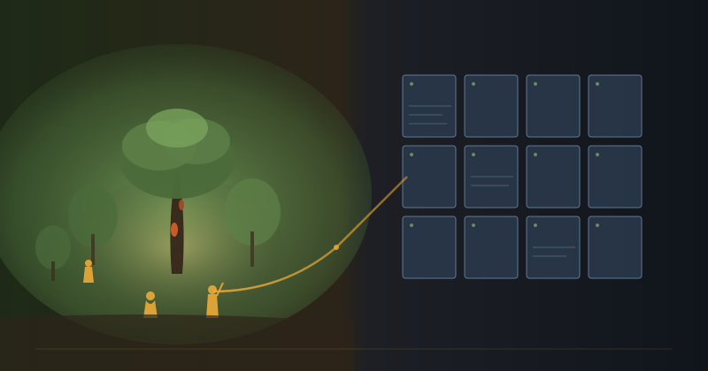

There is a grove of cacao trees in southern Bahia where eighty-year-old Criolla trees still drop their pods every wet season. Three generations of the same family have tended them. We have a partner there. There is also a Python script in us-east-1 that tracks his shipments. We wrote the script. We did not write the relationship.
That sentence is the architecture.
The default direction is wrong
Most supply chains, regenerative or not, are organised one way. Humans cluster at the customer end — sales reps, marketers, buyers, account managers, brand storytellers. Abstractions cluster at the source — certificate auditors, freight aggregators, sourcing offices on the wrong continent, “ethical” certifications that nobody at the grove has read. The grove itself becomes a row in someone’s procurement spreadsheet. A specification. A unit price.
This is the default for a reason. The customer end is where the money changes hands, and human attention near money is how you protect margin. The source end is where the messy parts of agriculture live — weather, soil, seasonality, the slow patience of a tree — and the standard tool for those messy parts is to wrap them in a clean abstraction and forget them.
We have built it the other way around.
The machine work is local. An autopilot watches our CI overnight; when something breaks at 11pm it has usually opened a draft fix PR before morning. The Partner Check-in surface ingests every signed note an operator writes after a partner conversation and lands it in the ledger inside a few seconds. A treasury cache snapshots inventory and balances to a public JSON every few hours so any analyst — human or LLM — can read the books without asking anyone for permission.
The human work is remote. It happens in Oscar’s grove and at Fazenda Santa Ana, at the Coopercabruca cooperative in Itacaré, with CEPOTX further north in Pará. It happens in the back room of a small apothecary in Portland where someone has agreed to stock our cacao for a season. It happens in a circle of strangers in São Paulo who drink the cacao together for the first time and look up.
None of that is data. None of that is a row in a spreadsheet. None of it should be.
What we kept human
The work that stays on the human side of the seam has a particular shape. It cannot be described as a rule.
A rule says: if stock below three units, trigger restock workflow. A relationship says: Gergana is in a quieter stretch right now — bring a sample on the next trip, ask about her staff, don’t run an automated nudge. The first sentence can run on a cron. The second one needs someone who has met Gergana, who has stood in her shop, who has read the room when the conversation about cacao circles came up and chose to wait.
A rule says: flag the SKU where last_sale_date exceeds 45 days. A relationship says: Niccolina took the consignment as a favour, the shop is moving slower than she hoped, and the right next step is a sample drop and an honest conversation, not an automated nudge. A scanner cannot tell those two apart. A person who has been to Go Ask Alice in Santa Cruz can.
A rule says: schedule the next inbound shipment for week 32. The work at the other end of that schedule is Santos and his wife in Brazil hand-packaging two hundred grams of ceremonial cacao into kraft pouches, weighing each one, sealing each one, writing the lot number in pen on a label. At the U.S. end of the same shipment, Kirsten does the same kind of work in her space where she offers chocolate experiences, for the bags that arrive in bulk. No Brazilian or American certification captures the care either of them takes. The Correios tracking number on the parcel that lands eight weeks later is a thread; the work is not the tracking number.
The same is true at Coopercabruca and CEPOTX, where the cooperatives keep multi-generational knowledge of soil and shade and pruning that no certification body has ever bothered to write down. It is true at the Davos cacao circle and the Éporã ceremony and every retail visit where someone tries a sample for the first time and decides whether to carry the line. These are the parts that took years to build and that an AI cannot inherit.
The whole reason the supply chain exists is bound up in those parts. The cacao is not the product. The cacao is the wedge. The product is a regenerative thread — from a grove that absorbs carbon and shelters biodiversity in one of the planet’s most pressured bioregions, through a hand-packaged bag, into a wellness shop, into a ceremony, into a person who pays for the experience and in doing so funds the next hectare of restoration. The thread runs through people. If the thread breaks, the model breaks. Automating the parts where the thread runs through people is the one thing this system cannot survive doing.
What we let the machines do
Everything else.
The autopilot polls the operator’s inbox for GitHub Action failures, fetches workflow logs, asks an LLM to diagnose the root cause, and opens a draft fix PR for review. It does not auto-merge. It cannot send mail on the operator’s behalf. It can propose; a person approves.
The Partner Check-in scanner reads signed events out of the Telegram intake and lands rows on the Main Ledger inside seconds. The Shipping Planner API returns a partner’s check-in history, surfaces who is overdue, and computes a default next-check-in date from the partner’s own sell-through rate so the operator does not have to do that arithmetic in their head before the next conversation.
A multi-LLM orchestration layer, described in an earlier post called The shared memory is the moat, hands work between models depending on what tier of attention it needs. Claude writes the plan. Kimi implements one subsystem. Codex does in-IDE completion. Each one reads from and writes back to the same agentic_ai_context repository, which holds the operating instructions, the project index, the editorial tone, the partner outreach protocol, and every feedback rule any session has captured. A model joining the work for the first time can read its way into context in a few minutes. None of the contractors have to be onboarded by a human.
The signed-event ledger underneath all of this — Edgar receives RSA-signed contributions from operators and AI agents alike, dispatches them through Telegram Chat Logs to per-event scanners that write into Google Sheets — runs without anyone watching it. The cron is healthy. The webhooks return 200. The treasury cache updates. The dashboards refresh. None of this requires presence.
That is the work the machines should be doing. It is rules-shaped. It is cheap. It is accurate. It is indifferent to context, which in this domain is exactly the quality you want at this end of the seam. A grove cannot afford indifference. A webhook handler should not be anything else.
Why the inversion holds
Two kinds of small regenerative supply chain tend to break in predictable ways.
The first kind over-automates. It treats the source as a number on a vendor scorecard. It scales by adding distribution partners and reducing per-unit cost. Margin improves. Volume improves. But the thing the brand started out claiming — that this was different, that the farmer was different, that the trees were different — quietly disappears. The thread breaks at the source. Whatever was regenerative about the model becomes a marketing layer over a normal commodity chain.
The second kind over-humanises. The operator personally knows every farmer, personally visits every shop, personally hand-packs every order. The work is beautiful. It does not scale past the operator’s calendar. After two years the operator is burned out, the relationships are still real but starved of operational support, and the ledger has not been reconciled in months. The thread holds at the source and frays at the back office.
Both failure modes share a root cause. They treat operations and relationships as the same kind of work, to be allocated to the same kind of attention. They are not. Operations are rules-shaped. Relationships are presence-shaped. A human running operations spends the cognitive surplus that could have been in the grove on reconciling a spreadsheet. A network of cooperatives expected to run on a brand’s marketing budget instead of standing relationships eventually drifts back to whoever pays cash on Tuesday.
The inversion is the third path. The machines absorb the operations. They do it cheaply, indifferently, around the clock. The operator’s time, and any time we ever buy from contributors who join the work, goes to where the thread actually runs — the grove, the cooperative meeting, the back room of the wellness shop, the cacao circle. The regenerative model holds because the regenerative work is where the people are; the operational model holds because the operational work is where the cron is. Neither end has to compromise.
The first thing we would add if our cacao revenue tripled tomorrow is not a marketing hire. It is a second person who can be in Bahia for the months Gary cannot. The machines are already plenty.
A note on what this is for
The cacao is not the point. We are aiming at 10,000 hectares of Amazon restoration. The economics work like this: the regenerative groves we partner with absorb carbon and protect bioregional diversity simply by being tended; the cacao that comes off them funds the next stretch of restoration through retail sales, ceremony work, and a small but real distribution network across the United States, Europe, and Brazil. Every bag of AGL4, AGL7, and the shipments that will follow them is a financing instrument for a hectare we have not yet restored.
An automated supply chain that loses the human end loses the only reason this is a regenerative project rather than a commodity project. A purely human supply chain that loses the operational end cannot fund the restoration at the scale the bioregion needs. Both ends matter; they require different kinds of attention; and the seam between them is where most of the architectural choices live.
A grove with eighty-year-old trees, a few cooperatives, a handful of wellness retailers, an autopilot, a multi-model orchestration layer, and a habit of being in the places where the work happens. That has been most of what running this supply chain has turned out to be.
The far end is the human end. The near end is the machine end.
It looks backward from the outside. From the inside it is the only arrangement that lets both halves do their actual work.
Join the discussion
The receipts for this post live in the open. The agentic_ai_context repository holds the operating instructions and the editorial conventions. The truesight_autopilot source describes the watcher that opened the draft PR underlying this paragraph. Agroverse carries the partner pages, the farm pages, and the consignment ledger that traces every bag.
Share your thoughts in Telegram, Beer Hall, and on the DAO web app.